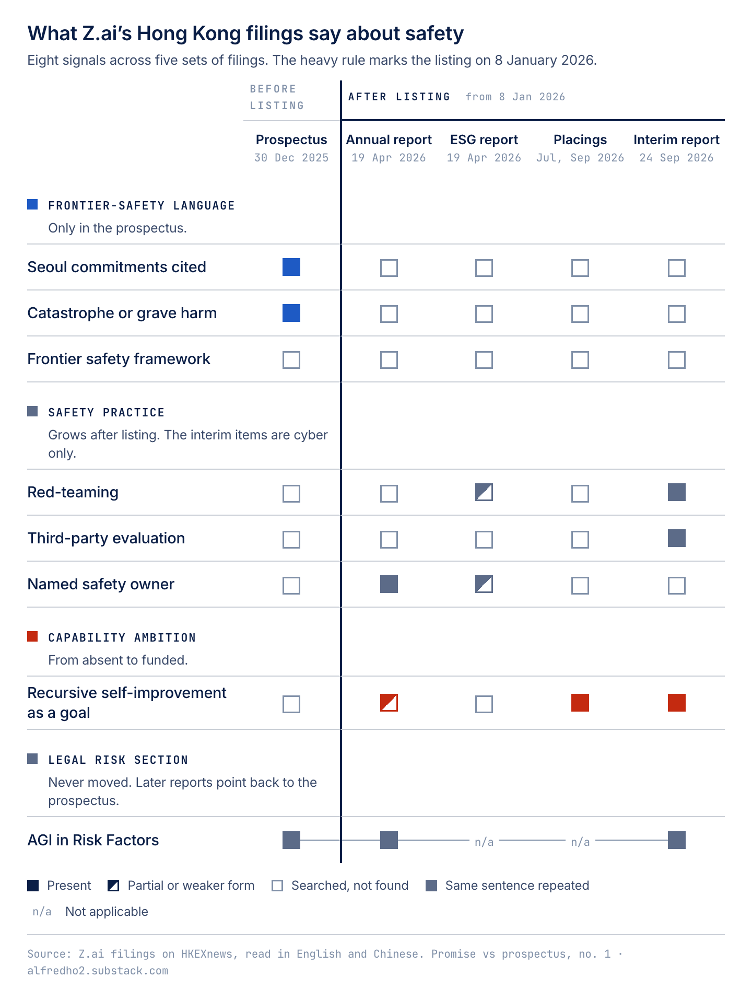

Promise vs prospectus · data
Every statement about risk or safety in Z.ai's Hong Kong filings, from the December 2025 prospectus to the September 2026 interim report. 261 statements, quoted verbatim with page numbers and scored. This is the data behind the first Promise vs prospectus piece.

| Document | Date | Statements |
|---|---|---|
| Prospectus | 30 Dec 2025 | 152 |
| 2025 Annual Report | 19 Apr 2026 | 26 |
| 2025 ESG Report | 19 Apr 2026 | 37 |
| Announcement: proposed A-share issue on the STAR Market | 1 Jun 2026 | 5 |
| Announcement: GLM-5.2 launch | 15 Jun 2026 | 1 |
| Announcement: placing of new H shares | 9 Jul 2026 | 2 |
| Announcement: placing of new H shares and issue of convertible bonds | 13 Sep 2026 | 8 |
| 2026 Interim Report | 24 Sep 2026 | 30 |
Two other announcements were read, a 7 July clarification and a 14 July name change. Neither contains a statement about risk or safety, so they have no rows.
Each document was read in full, with AI assistance, against one schema: the kind of statement, the risks it names, how specific it is, how firm the commitment is, and which Seoul commitment it speaks to. A script then checked every quote against the source text. 256 match exactly, 4 differ only in spacing and 1 runs across a page break. The quotes used in the piece were also checked by hand in English and Traditional Chinese.
No statement is tagged with Seoul item II (thresholds for intolerable risk) or item IV (what a company does when a threshold is reached).
| Column | Meaning |
|---|---|
claim_id | ID of the statement. |
document, document_date | Source filing and its date on HKEXnews. |
pdf_page | Page position in the PDF file. |
printed_page | Page number printed in the document. The ESG report prints two pages on each PDF page, so its rows show a pair. |
section | Heading the statement sits under. |
claim_type | capability_claim, safety_practice, safety_commitment, safety_as_business_value, risk_acknowledgment, regulatory_compliance, governance_structure, external_commitment_reference, incident_or_event or other. |
risk_domains | Risk areas the statement names, such as catastrophic_or_frontier, loss_of_control_or_alignment, misuse_cyber or privacy_data. |
specificity_0_3 | 0 nothing concrete, 1 generic, 2 specific, 3 verifiable (names a process, threshold, owner or number). |
commitment_strength | none, aspirational, stated_practice or measurable_or_time_bound. |
forward_looking | Whether the statement is about the future. |
seoul_items | Which of the eight Frontier AI Safety Commitments (Seoul, May 2024) the statement speaks to. |
verifiable_by_outsider | Whether someone outside the company could check it. |
quote_match | exact, loose (spacing only) or partial (runs across a page break). |
quote | The statement, verbatim from the English version of the filing. |
This is version 0. The scores are judgments and open to challenge; the quotes come straight from the filings. Corrections are welcome in the comments on the piece, and changes will be logged here. This is governance analysis, not investment advice.
Alfred Ho · alfredho2.substack.com · Updated 4 October 2026